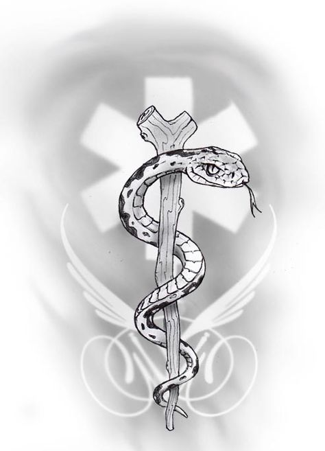

ראשית, עליך לדעת שקעקוע הוא בעצם פצע וכדי שיחלים באופן מושלם, עליך לטפל בו לפי ההנחיות הבאות:
1. כשעתיים לאחר ביצוע הקעקוע הסר את התחבושת ונקה בעדינות במים ובסבון.
לאחר הורדת התחבושת החד פעמית, אין לחבוש את המקום שוב.
2. ביום ביצוע הקעקוע יש לשטוף את המקום מספר פעמים (כל שעה- שעתיים עד השינה) ולשים חולצה קלילה שיכולה להתלכלך.
3. למחרת היום לאחר הרחצה (לא אמבטיה) יש למרוח שכבה דקה של משחת "בפנטן פלוס".
4. במשך שלושה שבועות מביצוע הקעקוע, עליך למרוח בעדינות שכבה דקה של משחת "בפנטן פלוס", פעמיים ביום- עם ידיים נקיות.
5. בזמן ההחלמה (שלושה שבועות), אסור להיחשף לשמש ואסור להיכנס לים או לבריכה.
6. בזמן ההחלמה הקעקוע מתקלף-כמו כל פצע- אסור לקלף, לשפשף או לגרד את הקעקוע- יש לתת לקעקוע להחלים ולהתקלף באופן טבעי
7. קעקוע מחלים רק לאחר שהוא מתקלף לגמרי ואינו מבריק.
8. באופן כללי, כאשר הקעקוע החלים וכבר יוצאים לשמש יש למרוח על הקעקוע קרם הגנה הכי גבוה נגד השמש, למניעת דהיית הצבע של הקעקוע.
9. לאחר כחודש וחצי יש להגיע לסטודיו לביקורת.